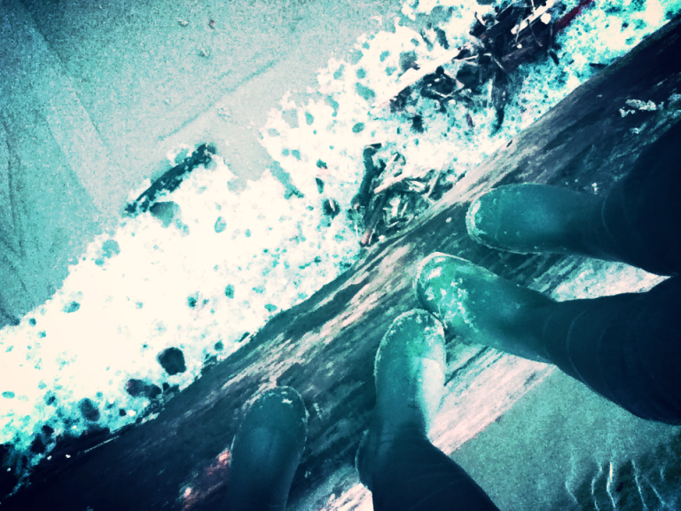

Lens: Going (away)
The age of migration is upon us. Human beings are mobile, in part due to the wonder of air travel, whose planes make relationship and imagination possible in spite of vast distances.
What social scientists deem a phenomenon, I call my lived reality. I collect toiletries in Ziploc baggies (an import) ready and loaded for the trips ‘home’ – a term, which we all know is ever ambiguous and relative. I transport chocolates and schnaps to loved ones on the other side, bringing back Trader Joe’s peanut butter and Pinot Noir to this side. I am heavily invested in both.

It might be confusing, but this dynamic – this swinging pendulum of belonging and longing through distance that depends on where you find yourself – is both challenging and beautiful. Out of this experience, we learn about the true weight of relationship beyond the convenience of proximity.
For going is about leaving, but it doesn’t have to be defined by it.
Berlin Tegel is quiet in the mornings, the terminals kept so tidy to hide even the most dramatic of goodbyes. It is 4am, and I am heading to Portland, Oregon via Amsterdam. Looking around, I am reminded of my first arrival back in 2010 with a plan only to study but no plan for where I would live, who would be my social support, or even how I should dress to avoid the look of the foreign (something now worth embracing). I stayed with the family of a girl I had met on the plane, whose father happened to be the chief of the Kreuzberg fire department, giving me my first introductory automotive tour in nothing other than a red fire engine. Now, cloaked in pre-dawn darkness, I lean into the arms of my biggest fan, saying goodbye in a language different from the one that will soon fill my mouth with memory, with a brevity different than that felt when pressed into the family members and friends I am to visit but cannot take with me.
Love, belonging, and connection do not dissipate in the process of journey or the reality of separation, neither are such feelings interchangeable depending on location. These feelings remain differentiated.
Because the comings and goings of life in transit are made material not purely by the wonder of air travel and the spaces which mediate it but by the destinations and origins on either side. Anthropologists emphasize the role of imagination and memory in unraveling and redrawing the lines and sensations of locations to which we feel connected. Put simply, we carry around images of ‘home’, ‘paradise’, ‘university’, ‘work’, ‘grandma’s’ etc. with us, often in multiple representations, often in ever-changing quantities and with ever-changing qualities. Pink glasses with pineapple skewers, dreary winters full of long conversations near the sea. Umbrellas and the smell of moist newspapers, packed metro cars and cake-filled coffee dates. A stuffy airport with the smell of cigarettes and burnt espresso, a stuffy airport with the smell of mold and soy milk.

I look at my luggage, marked with a name, a number, a house – somewhere that could very well be irrelevant to where I am going. In my mind, a feeling of moving, passing, changing – a sense of going. The airport cannot begin to represent this moment, one that has become central to my daily life, to the shape and activity of my social networks, even shaping my consumer decisions and the ways in which I do not invest in sets of towels or dishware. Even with the distraction of thought, I put my passport into the check-in machine, automatically flipping through the questions I have been asked on this same monitor now for the fourth time in two years. “What is my nationality?” “What is my country of residence?”, the differences here are key to the international system but not to mine. The German woman next to me enters the U.S. as “country of residence”, thinking that her trip to the United States validates her residency. I correct it in the computer for her, in order to speed up the line, though I wish to add that well…residency is complicated.
Airports might just be the perfect splice of how we navigate relationship. Position yourself for an hour on the curbside of Arrivals and you will see what I mean: airports are special for the human condition. We find ourselves gathered in establishments organizing such massive scales of movement, suspended in air, hurled gently across the ocean into the arms of those we love and those who love us. In hours, our imaginations and our longings are realized. As a result, we are inevitably pulled out of the arms of love, support, and belonging on one side, deferring to the other.
After a tight squeeze, the face that I always want to see turns to walk away. I am filled with emotion, a feeling I know I will have in just two weeks on my way of return – hugging my family goodbye and being overcome by their absence in seconds, by the weight of leaving, now for a second time in less than a month. Excitement and possibility tainted by a strange loneliness and fear. I look back to find his hand waving. Will his fingers be the same in 16 days, his voice? Will my father’s face have aged? My mother’s mind? I turn toward the security line, into the place I am going. Umbrellas and the smell of moist newspapers, dreary winters full of long conversations near the sea.

Going is a process of letting go (of my slight fear of flying, of my need to be ‘on call’, of my need to validate my relationships by constant contact). It involves packing – knowing I will return or want to bring back with me all kinds of transnational goodies and identity markers, like McMenamins coasters. But more than anything, it is about coming into my imagination of this other home and preparing for what will be the task of leaving it.
As an hour in an airport would demonstrate, we migrate, we immigrate, we travel and tour, and thus, we leave someone and something behind. When we return, it is always with change: hairs lost on the other side of the ocean, water in the gut from different ground, dreams focused on the precipice of their mountains. Yet, relationships continue, reliant on a process of adaptation and connection that is not co-dependent on texting or casual coffee dates. And we are better for it.

As a voluntary immigrant to a place in which my sense of belonging and connection has been entirely invented, I have learned this much: going is about letting go and embracing that, in the face of distance, our connections to each other are going to be ok.
– By Kelly Miller
Photos taken by yours truly in Oregon or in transit with a joke for a camera (i.e. an Ipod).
I know the airport scene and the feeling you describe. Isn’t it good to have those places where you are loved, two homes across the world? I smiled at the photo of the motorcyclist parked along side of the road. I remember that spot just outside of Maupin, it too caught my eye for a brief moment.
🙂 it is a rich life, indeed, though sometimes a confusing one. i get better at it every day and, of course, having those people on both sides who understand and relate makes it all worth it (like you, dad). the bikers outside of Maupin just seemed quintessentially American to me, in the way I have come to understand my relationship to this ‘other side’ : wild and mysterious, often a little rough at the edges, though always warm in a way only memory can make sense of…or something like that 🙂
your words make me so happy.